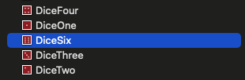

* 개인적인 공부 내용을 기록한 글이기에 잘못된 내용을 포함하고 있을 수 있습니다.
* 이미지 리터럴 방식과 UIImage 방식의 차이점에 대한 내용을 다루고 있습니다.
이미지 리터럴 방식이란? Xcode에서 제공하는 시각적 편의 기능으로 코드에 이미지 선택 UI가 표시된다.
이미지 리터럴 방식으로 코드를 선언하면 내부적으로는 UIImage(imageLiteralResourceName:)를 호출하는 방식으로 동작한다.
이미지 리터럴로 이미지 파일명을 명시하는 경우 Assets 폴더 내부로 접속해 해당 이미지를 코드로 불러온다.
아래 문자열 기반으로 접근하는 UIImage 를 사용한 코드와 #imageLiteral을 사용한 코드는 동일하게 동작한다.

diceImageView1.image = UIImage(imageLiteralResourceName: "DiceSix");
diceImageView2.image = #imageLiteral(resourceName: "DiceSix");
그러나 Xcode12 버전 이후로는 공식적으로 이미지 리터럴 UI를 지원하지 않기에 사용자가 이름을 수동으로 입력해야만 한다.
#imageLiteral( 까지 입력하면 아래와 같이 이미지를 선택하는 창이 출력되며, 원하는 이미지를 선택하면 코드에 반영된다.


그러나 해당 기능은 언제 deprecated 될 지 모르며, 코드의 가독성을 고려한다면 UIImage 방식을 사용하는 것을 권장한다.